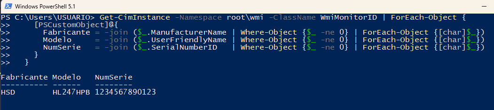
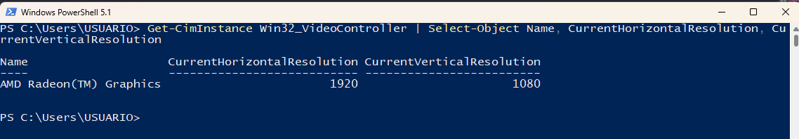
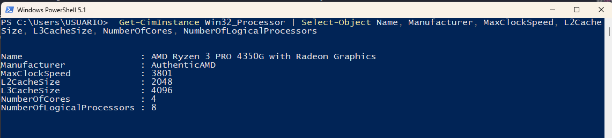
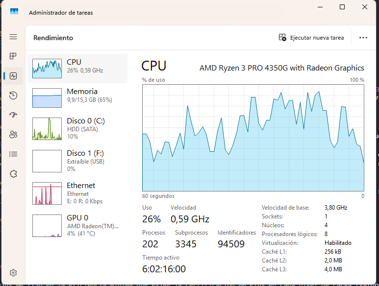
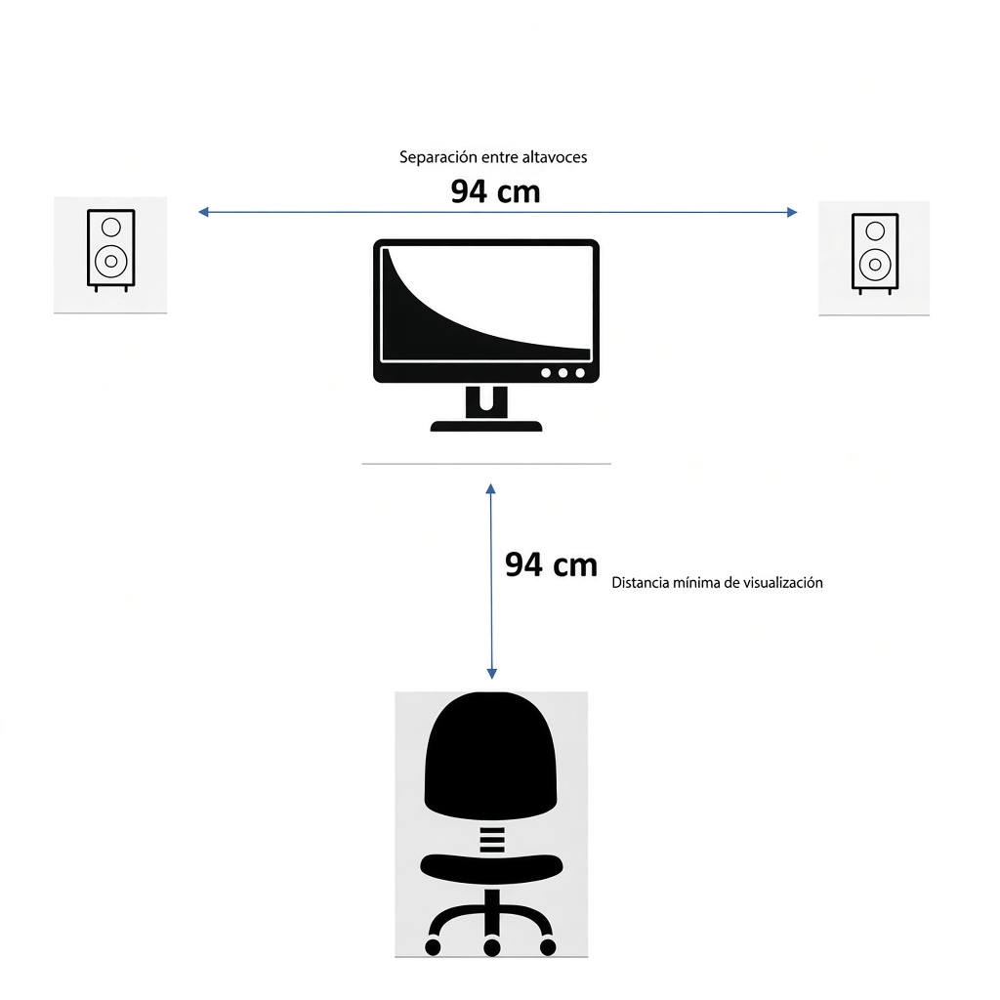

Alumno: Mohamed Amin Ben Assad El Arine
Módulo: Sistemas informáticos
Curso: 1.º DAW – IES Murgi 2026-2027
Para sacar la información desde la consola uso dos herramientas: el Símbolo del sistema (CMD) y PowerShell. En los dos casos se apoyan en WMI, que es la parte de Windows que guarda los datos del hardware.
Memoria RAM (me da fabricante, modelo, número de serie, capacidad y velocidad):
wmic memorychip get Manufacturer, PartNumber, SerialNumber,
Capacity, Speed
Get-CimInstance Win32_PhysicalMemory | Select-Object Manufacturer,
PartNumber, SerialNumber, Capacity, Speed
Datos de mi RAM
| Dato | Valor |
|---|---|
| Fabricante | Silicon-Power |
| Modelo (PartNumber) | NO INFO |
| Número de serie | 00000000 |
| Capacidad | 16 GB |
| Velocidad | 2666 MHz |
Monitor (fabricante, modelo y número de serie, más la definición de la pantalla):
Get-CimInstance -Namespace root\wmi -ClassName WmiMonitorID | ForEach-Object {
[PSCustomObject]@{
Fabricante = -join ($_.ManufacturerName | Where-Object {$_ -ne 0} | ForEach-Object {[char]$_})
Modelo = -join ($_.UserFriendlyName | Where-Object {$_ -ne 0} | ForEach-Object {[char]$_})
NumSerie = -join ($_.SerialNumberID | Where-Object {$_ -ne 0} | ForEach-Object {[char]$_})
}
}
Estos datos vienen como códigos ASCII, por eso el comando los convierte a letras.
Get-CimInstance Win32_VideoController | Select-Object Name,
CurrentHorizontalResolution, CurrentVerticalResolution
wmic path Win32_VideoController get Name, CurrentHorizontalResolution,En el segundo comando los valores salen en decimal (códigos ASCII), así que habría que traducirlos a texto.
CurrentVerticalResolution wmic /namespace:\\root\wmi path WmiMonitorID get ManufacturerName, ProductCodeID,
SerialNumberID, UserFriendlyName


Datos de mi monitor
| Dato | Valor |
|---|---|
| Fabricante (código de 3 letras) | HSD |
| Modelo | HL247HPB |
| Número de serie | 1234567890123 |
| Definición de pantalla | 1920 × 1080 píxeles |
Para ver el procesador con una sola instrucción uso:
Get-CimInstance Win32_Processor | Select-Object Name, Manufacturer, MaxClockSpeed,
L2CacheSize, L3CacheSize, NumberOfCores, NumberOfLogicalProcessors
wmic cpu get Name, Manufacturer, MaxClockSpeed, L2CacheSize, L3CacheSize,
NumberOfCores, NumberOfLogicalProcessors
Otra forma muy cómoda es el Administrador de tareas ("Ctrl+Shift+Esc" → pestaña Rendimiento → CPU), donde aparecen también las cachés L1, L2 y L3.


¿Cuál es su fabricante, modelo y generación o familia?
El fabricante es AMD, el modelo es Ryzen 3 PRO 4350G y pertenece a la serie 4000 (arquitectura Zen 2 / Renoir).
¿Cuál es su velocidad máxima de reloj? ¿Está preparado para overclock?
Su velocidad máxima es de 3,80 GHz (base). El valor "MaxClockSpeed" que da Windows suele ser la frecuencia base, así que la frecuencia máxima en turbo es 4,0 GHz (según la ficha oficial de AMD).
Sobre el overclock: en AMD Ryzen casi todos son desbloqueables. Mi procesador sí está preparado para overclock (aunque al ser modelo PRO es más habitual usarlo sin overclock).
¿Cuál es la capacidad de su memoria caché y de qué tipo es?
Tiene 2 MB de L2 y 4 MB de L3 (la L1 aparece en el Administrador de tareas: 256 kB). La caché es memoria SRAM, muy rápida, que se organiza en niveles: L1 (más pequeña y rápida, una por núcleo), L2 y L3 (más grande y compartida entre núcleos).
¿Cuántos núcleos tiene?
Tiene 4 núcleos físicos y 8 procesadores lógicos (hilos).
Para valorar los consejos me fijo en la eficiencia mínima que exige la certificación 80 Plus en cada nivel de carga (valores para 115 V):
| Certificación | 10 % de carga | 20 % de carga | 50 % de carga | 100 % de carga |
|---|---|---|---|---|
| 80 Plus Platinum | – | 90 % | 92 % | 89 % |
| 80 Plus Titanium | 90 % | 92 % | 94 % | 90 % |
Me parece un buen consejo. Lucía va a usar la fuente casi siempre al 100 % de su carga, y en ese punto la diferencia entre una Titanium (90 %) y una Platinum (89 %) es de solo un punto. Pagar mucho más por una Titanium para ganar un 1 % de eficiencia no compensa, y con la Platinum va a tener prácticamente el mismo rendimiento.
Eso sí, le recomendaría escoger una fuente con algo más de potencia de la que necesita. Trabajar siempre al 100 % no es lo ideal, porque calienta más, hace más ruido y desgasta antes los componentes. Lo normal es que una fuente rinda mejor y dure más cerca del 50 % de carga.
Aquí no estoy tan de acuerdo. Cecilio va a usar la fuente muchas horas con una carga de entre el 20 % y el 50 %, y justo en ese tramo la Titanium rinde mejor: 92-94 % frente al 90-92 % de la Platinum, es decir, dos puntos de diferencia, el doble que en el caso de Lucía. Además, la Titanium es la única que garantiza un 90 % incluso con cargas muy bajas (10 %), algo que a él le pasará a veces cuando el equipo esté casi en reposo.
Como su equipo está encendido muchas horas, esa mejora se acumula en consumo y en calor generado. Por eso la Titanium tiene más sentido para Cecilio que para Lucía, aunque la Platinum tampoco sería una mala compra si el presupuesto es lo que manda.
No me parece un buen consejo, por estos motivos:
Mi conclusión es que seguiría usando grasa de silicona (o la grasa que especifique el fabricante) y que no seguiría el consejo del técnico de PC CT.
Primero comparo lo que tiene cada uno.
| Características principales | |
|---|---|
| Newskill Gungnyr TKL Pro (teclado de Alfredo) | Teclado de formato TKL, es decir, sin teclado numérico. Es optomecánico, con interruptores Gateron Red de pulsación suave y lineal, cambiables (hot-swap). Va por cable USB (1,8 m), con iluminación RGB y orientado a gaming. Los interruptores están pensados para unos 100 millones de pulsaciones. Es más ruidoso que uno de membrana. |
| Logitech MX Keys S (teclado de Elisa) | Teclado de tamaño completo, con teclado numérico. De perfil bajo y teclas cóncavas, de escritura rápida y silenciosa. Inalámbrico por Bluetooth, con receptor Logi Bolt, y puede emparejarse con hasta 3 dispositivos. Batería recargable por USB-C y retroiluminación inteligente. |
| Microsoft Surface Mouse WS3-00006 (ratón de Alfredo) | Bluetooth, ambidiestro y simétrico, de 3 botones. Es plano y ligero (unos 91 g), con sensor BlueTrack de 1000 dpi y clics silenciosos. Funciona con 2 pilas AAA y declara hasta 12 meses de batería. |
| Microsoft Mobile Mouse 3600 (ratón de Elisa) | Bluetooth, ambidiestro, de 3 botones con rueda de 4 direcciones. Es muy compacto (unos 95 × 57 mm) y pesa solo 63 g. Usa una pila AA y sensor BlueTrack de 1000 dpi. La rueda va "a pasos" y es algo más ruidosa. |
Conclusión: les diría que mantengan los teclados y que se intercambien los ratones. La diferencia es pequeña, pero cada uno queda con el que mejor encaja con su forma de trabajar.
Parto de estos datos: monitor de 30 pulgadas, formato 21:9 y 1080p. Al ser 21:9 con 1080 píxeles de alto, la resolución es de 2560 × 1080.
d = 0,274 mm / tan(1/60°) = 0,274 / 0,000291 ≈ 942 mm
Resultado: debo sentarme como mínimo a unos 94 cm (≈ 0,94 m) de la pantalla.
Para que se note bien el efecto estéreo, los altavoces y la persona deben formar un triángulo equilátero (ángulo de unos 60° entre los dos altavoces vistos desde mi posición). Eso significa que la separación entre altavoces tiene que ser igual a la distancia a la que estoy sentado:
Separación entre altavoces ≈ 94 cm.
Es decir, cada altavoz queda a unos 47 cm del centro del monitor. Como la pantalla mide unos 70 cm de ancho (35 cm hasta cada borde), cada altavoz quedará unos 12 cm por fuera del borde del monitor. Los colocaría a la altura de los oídos y ligeramente girados hacia mí.

.png)